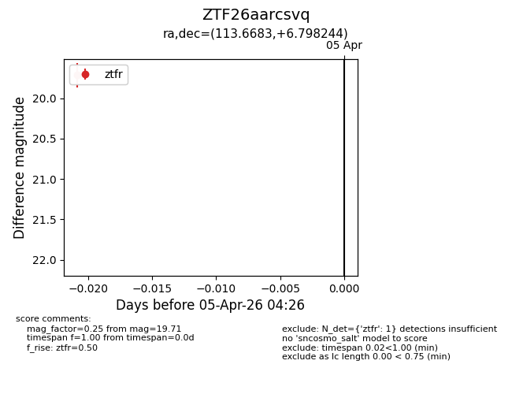
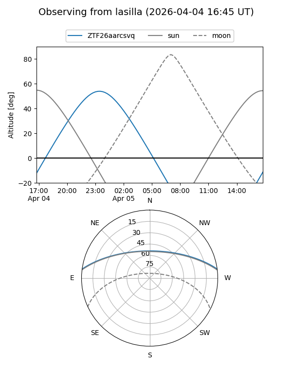
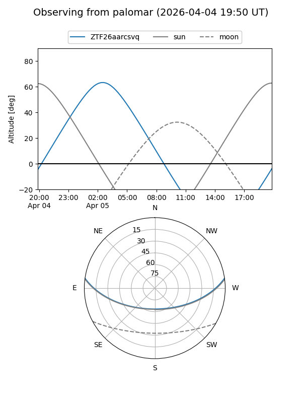
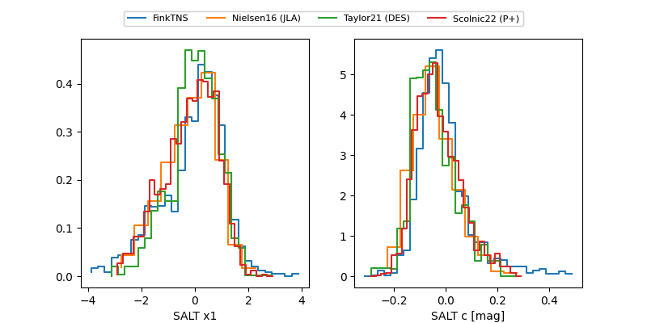

ZTF26aarcsvq
Target ZTF26aarcsvq at 2026-04-05 04:30
Aliases and brokers:
FINK: link
Lasair: link
ALeRCE: link
alt names
ZTF26aarcsvq (ztf,fink_ztf)
Coordinates:
equatorial (ra, dec) = 113.6683,+6.79824
equatorial (HMS+DMS) = 07:34:40.39,+06:47:53.68
galactic (l, b) = (211.7314,+12.69170)
Flags:
Photometry:
last ztfr=19.71
1 ztfr detections
Lightcurve

Visibility


Additional plots
